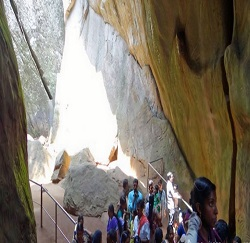
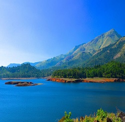

Edakkal Caves also Edakal, are two natural caves at Edakkal, around 120 km south-west of Mysuru, in Wayanad district of Kerala. The caves are situated 1,200 m above sea level on Ambukutty Mala, on the Mysore Plateau, in the Western Ghats.
Read moreBanasura Sagar Dam, which impounds the Karamanathodu tributary of the Kabini River, is part of the Indian Banasurasagar Project consisting of a dam and a canal project started in 1979.
Read moreMeenmutty Falls is located 29 km from Kalpetta in Wayanad District in the state of Kerala, India. It is a three-tiered waterfall with a height of 300 metres. Meenmutty is a combination of Malayalam words Meen and Mutty. Meenmutty Falls can be accessed from Mananthavady - Kuttiady road.
Read more